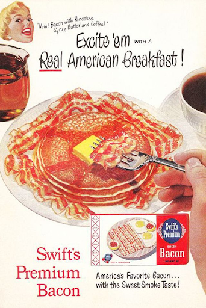
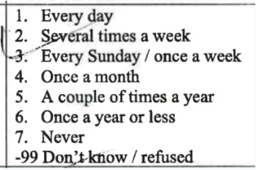
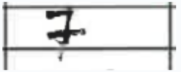

20 Design Questions
20.1 Guidelines for Effective Question Design
To develop effective survey questions, Krosnick (2018) suggests the following guidelines:
- Use simple and familiar words to ensure clarity and comprehension. Avoid technical terms, jargon, and slang.
- Employ simple sentence structures and syntax for easy understanding.
- Avoid words with ambiguous meanings to ensure all respondents interpret the questions similarly.
- Make questions specific and concrete rather than general and abstract to obtain consistent and reliable responses.
- Provide response options that are exhaustive (covering all possible choices) and mutually exclusive (no overlap between options).
- Avoid leading or loaded questions that sway respondents toward a particular answer.
- Ask about one thing at a time to prevent confusion and promote accurate responses. Avoid double-barreled questions that combine multiple topics.
- Steer clear of questions with single or double negations, as they can be confusing and lead to misinterpretation, even if some disciplines require a portion of questions to use negation.
20.2 The Impact of Question Order
The sequence of questions in a survey can significantly impact responses and respondent engagement. Here are some considerations:
- Start with easy and pleasant questions to build rapport and boost respondent confidence.
- Begin with questions directly addressing the main topic as described to the respondent prior to the survey.
- Group related questions together to maintain continuity and coherence.
- Sequence questions on a specific topic from general to specific, gradually narrowing the focus.
- Place sensitive questions that may make respondents uncomfortable towards the end of the questionnaire, allowing participants to warm up before addressing personal or sensitive topics.
- Include filter questions to avoid asking irrelevant queries. This ensures participants only answer questions applicable to them.
Adhering to these principles of question design and order can enhance the quality and reliability of survey data.
If you’re looking for tested questionnaires, I highly recommend the repository created by Gabriel Gilmore & Sara Finney, which offers a comprehensive collection of validated questionnaires.
Measurement error is a difference between answers you get and true values. You can also think about it as mismatches between the questions you ask and the answers that people give you.
20.3 Survey Says: Bacon!
Edward Bernays, a prominent figure in public relations, was approached by a bacon company seeking to boost sales.
Initially, Bernays conducted research and found that a substantial breakfast was likely beneficial for health. Armed with this information, he approached the physician on his team and requested his endorsement, leading to a survey sent to 5,000 colleagues, all of whom agreed with the health benefits of a hearty breakfast.
The results were sent to the media culminating in headlines proclaiming “4,500 Physicians Advocate Heavy Breakfast for Improved Health.” This endorsement, along with the suggestion of incorporating bacon and eggs into breakfast, had a significant impact on public perception.
It’s worth noting that the bacon product itself was not in question. Rather, Bernays utilized the opportunity to align the product with a broader health message, successfully increasing bacon sales.
What is wrong with the question and the conclusion?
What is better for health, a slight or substantial breakfast?
- Slight
- Substantial
“4,500 physicians urge heavy breakfast in order to improve the health of the American people”
Have more Eggs and Bacon for breakfast!

20.4 Types of Question Formats
Different types of question formats in a questionnaire enable capturing diverse data types and facilitate varied response types from participants. Three commonly used question formats are:
Radio Buttons: Ideal for questions that require respondents to select only one answer from a list of options. The respondent chooses a single option by clicking on the corresponding radio button.
Checkboxes: Suitable for questions that allow respondents to select multiple answers from a list of options. The respondent can select multiple checkboxes to indicate their choices.
Text Boxes: Used when respondents need to provide a written response or input data not covered by predefined options. Text boxes allow users to type in their responses freely.
Properly utilizing these question formats ensures that your questionnaire captures the necessary information and provides clear response options. However, it’s essential to provide clear instructions on how participants should input their responses, else the data might be susceptible to interpretation.
 
The choice of question format should align with the nature of the question and the type of response you are seeking.
20.5 Likert Scales
Likert scales are commonly used in surveys to measure attitudes, opinions, and perceptions. Here are some considerations when choosing the number of scale points:
5 or 7 Points: Both 5-point and 7-point scales are widely used and offer sufficient response options for capturing a range of opinions. There is generally no significant difference in response patterns between these two options.
Consider Respondent Ease: Using a lower number of scale points, such as 5, makes it easier for respondents to quickly choose their answer. This leads to higher response rates and less respondent fatigue.
Higher Points for Specific Needs: In some cases, a higher number of scale points may be necessary to capture nuanced responses or when greater precision is required. This could be relevant in specialized research or when examining highly specific attitudes or behaviors.
Follow Established Protocols: If your survey is part of a larger study or research field, it is advisable to use the scale points commonly used in that context. This ensures consistency and comparability with existing research.
At the end, the person who decides the scale is the one who pays ;)
Ultimately, the decision on the number of scale points rests with the survey designer, considering specific research goals, target audience, and practical considerations.
For a guide on constructing questions with Likert scales, you can refer to this document based on Vagias (2006).
20.6 “I don’t know” and N/A Options
Including “I don’t know” and N/A (not applicable) response options in surveys can impact data quality. Some considerations are:
Potential Impact on Data Quality: Inclusion of “I don’t know” and N/A options may not necessarily improve data quality. It can sometimes limit the measurement of meaningful opinions by providing an ‘easy way out’ for respondents who might otherwise give a thoughtful response.
Influence of Mental Fatigue: Respondents experiencing fatigue or uncertainty about their opinions may select neutral options like “I don’t know,” resulting in a higher proportion of neutral responses and potentially masking genuine attitudes.
Optional Questions: All questions in a survey are optional. Respondents can choose to skip questions they do not want to answer or do not apply to them. Making questions optional allows individuals to provide answers only to the questions they feel comfortable or knowledgeable answering.
It’s crucial to consider these factors when designing surveys and deciding whether to include “I don’t know” and N/A response options. Krosnick et al. (2002) explored the impact of “no opinion” response options and their effects on data quality, highlighting potential trade-offs associated with their inclusion.
In summary, survey designers should consider the specific research goals, target population, and potential effects on response patterns when deciding whether to include these response options in their surveys.
20.7 Survey Length
The length of a survey can have significant implications for participant engagement and data quality. Below are some key points to keep in mind:
Drop-out Rates: In web-based university studies (Hoerger 2010), there is typically an instantaneous drop-out rate of around 10%, with an additional 2% drop for every 100 survey items. Consequently, longer surveys could lead to higher attrition rates as participants might become fatigued or lose interest.
Satisficing and Quality of Responses: Lengthy surveys, particularly in lab-based research, can result in satisficing behavior (Vriesema and Gehlbach 2021) where participants offer “good enough” responses instead of providing thoughtful and accurate answers. This could negatively impact data quality. However, these adverse effects may not significantly affect the overall results (Bansak et al. 2021).
Online Marketing Questionnaires: For online marketing surveys, keeping the survey length short is advisable (Wigmore 2022). Surveys longer than a few questions are likely to experience significant drop-out rates. Surveys taking longer than 10 minutes are strongly discouraged to maintain participant engagement.
Survey designers should strive to balance between acquiring the necessary information and keeping the survey manageable for respondents to ensure optimal participant engagement and data quality.
20.8 Survey Invitation
When inviting participants to a survey, it’s crucial to establish trust and provide necessary information. Here are some key elements to consider:
Introduction: Clearly identifying yourself and explaining the reason for reaching out to the specific person can help build trust and credibility.
Purpose and Benefits: Outlining the purpose of the survey and the benefits of participation can motivate the respondents. Explain how their responses will contribute to the research or decision-making process.
Incentives: If applicable, mentioning any incentives or rewards offered for participating in the survey can help motivate individuals to complete the survey.
Survey Overview: Providing an overview of the topics or questions covered in the survey helps manage expectations and assist participants in managing their time.
Closing Time: Specifying the deadline or closing time for the survey completion can create a sense of urgency and ensure timely responses.
In addition to these, consider adding a “Thank You” page after participants complete the survey. This shows appreciation for their time and participation.
A clear and concise privacy statement addressing privacy concerns can assure participants that their responses will remain confidential and used solely for research purposes.
Lastly, outlining your follow-up plan can let participants know if and how you will share the survey results or any actions that will be taken based on the findings.
Incorporating these elements into your survey invitation can improve participant engagement and enhance the overall survey experience.